Workspace Graphs
Workspace: Graphs¶
The Graphs workspace is exclusively dedicated to data visualization, engineered with a strong emphasis on simplicity, speed, and customization.
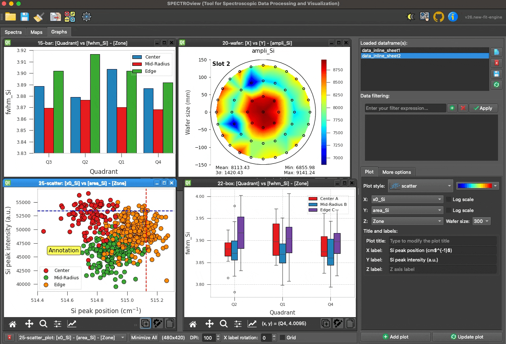
Overview of the Graphs Workspace interface.
1. Loading Data¶
Datasets can be passed seamlessly from the Spectra and Maps workspaces, or imported directly from external Excel/CSV files. All available datasets are dynamically tracked and displayed in the dataset list widget.
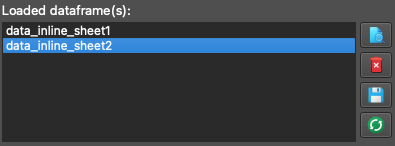
The four available utility buttons allow you to:
- View: Inspect the data table natively.
- Delete: Remove the dataset from the workspace.
- Save: Export the dataset to Excel or CSV.
- Refresh: Dynamically reload the CSV/Excel file if it has been modified externally.
2. Add or Update a Plot¶
- Select your target dataset from the list.
- Choose the appropriate columns for the X, Y, and Z axes using the provided dropdown menus.
- Select your desired plot style (available styles:
scatter,point,bar,box,line,trendline,histogram,2Dmap,wafer). - Define your plot labels, axis limits, and wafer diameter dimensions (if applicable).
- Click Add Plot to generate the visualization.
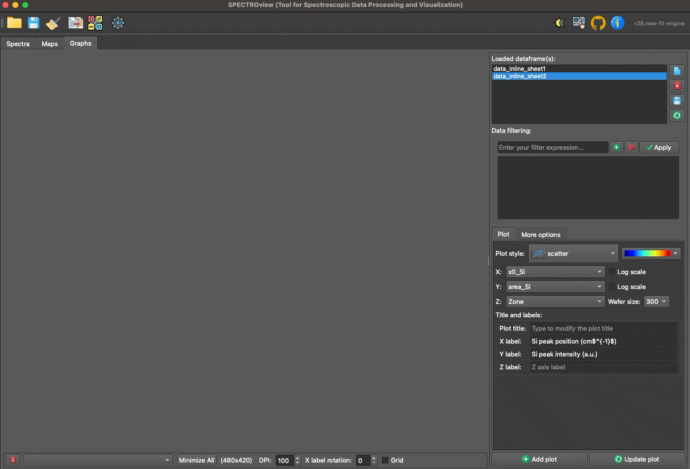
Demonstration of adding a new plot or updating an existing one.
3. The Shared Graph Toolbar¶
The bottom bar of the workspace hosts every global control plus one shared graph toolbar that always acts on whichever plot window is currently active. To make a plot active: click it, or pick it from the Active plot dropdown in the side panel (just above Add plot / Update plot).
| Control | Description |
|---|---|
| Delete all | Removes every plot from the workspace. |
| Minimize all | Minimizes every plot window. |
| Undo / Redo | Steps backward/forward through the workspace's edit history (Ctrl+Z / Ctrl+Shift+Z). |
| Compose Figure | Combines several open plots into one multi-panel exported figure. |
| Home / Pan / Zoom / Subplots | Standard Matplotlib navigation: reset the view, pan, zoom to a rectangle, or adjust subplot margins. |
A vertical separator marks where the plot's own controls start — always aligned to the right edge of the window:
| Control | Description |
|---|---|
| Replicate | Creates a duplicate of the active plot. |
| Customize | Opens the Customize Graph Dialog for the active plot (Ctrl+E, see below). |
| Copy | Copies the active plot's figure to the clipboard as an image (Ctrl+C). |
| Export | Click to export the active plot to file. Hold Ctrl + Click to export every open plot at once instead. |
| Style menu (🎨) | Save/apply a style, copy/paste style (Ctrl+V to paste), reset to default, or set the current style as the default for new plots. |
Note:
Ctrl+Z,Ctrl+Shift+Z,Ctrl+C,Ctrl+V, andCtrl+Eabove only work while the Graphs tab is the active tab — they won't interfere with the same shortcuts elsewhere in the app (e.g. typing in a text field).
4. Customizing a Plot¶
You can quickly modify the labels of the axes and the title of the plot via the Right Panel. Click the Update Plot button to apply the changes instantly:
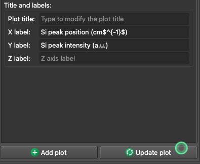
Customize the selected plot via the Right Panel. Click the Update Plot button to apply changes.
For advanced customization, click the Customize button (⚙) to open the Customize Graph Dialog. This dialog provides deep, granular control through four dedicated tabs: Axis, Legend / Color, Annotations, and More Options.
All changes across tabs are applied together via the unified Apply button at the bottom of the dialog, or discarded via Cancel.
4.1 Axis Tab¶
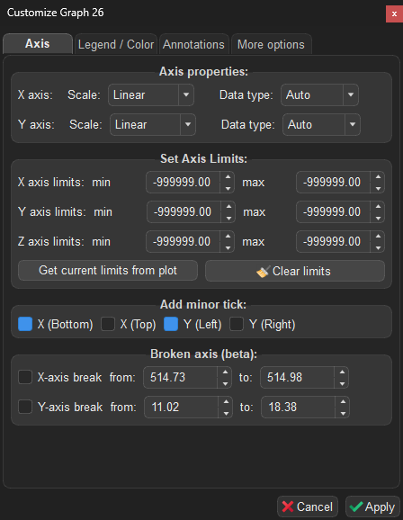
The Axis tab of the Customize Graph Dialog.
The Axis tab controls axis scaling, data types, limits, appearance, axis breaks, inset (zoom) axes, and secondary axes. Font sizes for titles/labels/ticks live in the More Options tab instead.
Axis Properties¶
Configure the scale and data type for each axis independently using dropdown menus:
| Setting | Options | Description |
|---|---|---|
| X / Y axis Scale | Linear, Logarithmic |
Switches the axis between linear and logarithmic scale. Logarithmic scale is only applied when the underlying data is numeric. |
| X / Y axis Data type | Auto, Category, Numerical |
Controls how axis values are interpreted. Auto (default): the application auto-detects the best type — numerical if 100% of the data is numeric, otherwise categorical. Category: forces categorical indexing. Numerical: forces a continuous numeric scale. |
Note: When using
Numericaldata type, the axis adopts a true mathematical scale where spacing reflects actual data values. When usingCategory, each unique value is evenly spaced regardless of its numeric magnitude.
Set Axis Limits¶
Manually constrain the visible range of each axis (X, Y, Z) by specifying min and max values:
| Control | Description |
|---|---|
| X / Y / Z axis limits | Enter min and max values to constrain the visible range. Leave a spinbox unset (it shows the plot's real current value, grayed out) to keep that side automatic. |
| Get current limits from plot | Captures the current visible limits from the plot and fills the spinboxes. Useful as a starting point before fine-tuning. |
| Clear limits | Resets all axis limits back to automatic (unconstrained). |
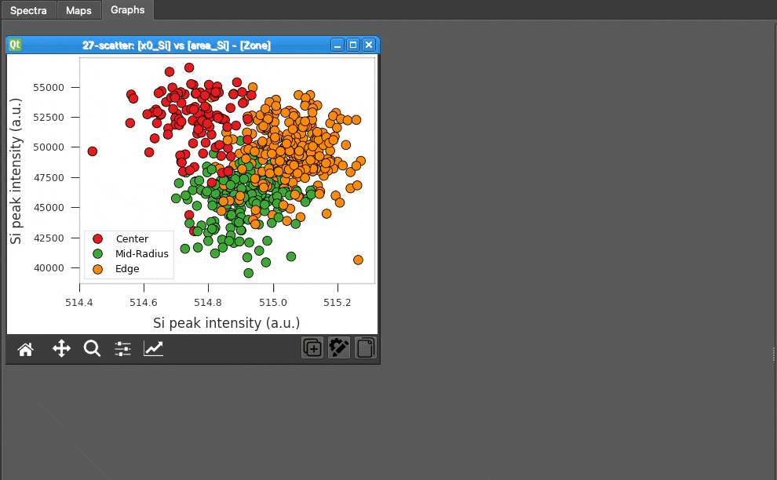
Adjusting the axis limits of the selected plot.
Axis Appearance¶
| Control | Description |
|---|---|
| Minor ticks (X Bottom/Top, Y Left/Right) | Enable minor tick marks on each edge of the plot independently (X Bottom and Y Left are on by default). |
| Show spines (Top/Right/Bottom/Left) | Toggle visibility of each of the four plot border lines independently. |
| Tick direction | Default, In, Out, or In & Out. |
| Tick label format | Auto, Integer, 1-decimal, 2-decimal, or Scientific. |
Broken Axis (Beta)¶
Create a visual break in an axis to omit an uninteresting range and focus on relevant data regions:
| Control | Description |
|---|---|
| X-axis break | Enable and specify the from / to range to break on the X axis. |
| Y-axis break | Enable and specify the from / to range to break on the Y axis. |
Note: This feature is in beta. Axis breaks work best with linear scales.
Inset (Zoom) Axes¶
Draw a small zoomed-in view of a region of the plot inside the main plot area:
| Control | Description |
|---|---|
| Enable inset axes | Turns the inset view on/off. |
| Position (x0, y0) / Size (w, h) | Placement and size of the inset box, as a fraction of the plot area (0–1). |
| X / Y limits | The data range the inset zooms into. Leave at the grayed default to auto-fit. |
| Show zoom indicator | Draws connector lines from the inset box back to the region it zooms into on the main plot. |
Note: Inset axes and a broken axis are mutually exclusive — enabling one disables the other.
Secondary Axes¶
Plot additional Y-columns (or a second X-column) against independent scales, one row per axis (Y2, Y3, X2). Each row is enabled once a column is assigned to that axis and lets you set a Label, Min/Max limits, a Log scale toggle, a Color, and a Marker.
4.2 Legend / Color Tab¶
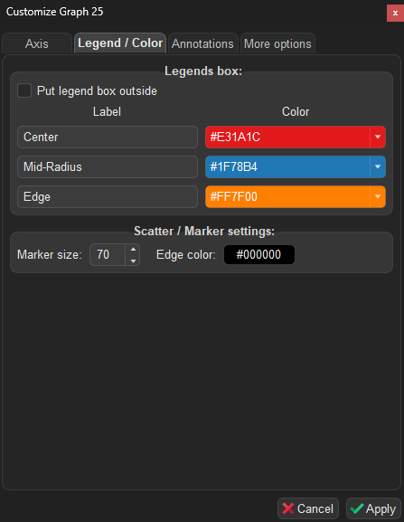
The Legend / Color tab of the Customize Graph Dialog.
The Legend / Color tab lets you customize the appearance and placement of the plot legend, per-series colors/markers, and error bar style.
Legend Box¶
| Control | Description |
|---|---|
| Put legend box outside | Moves the legend box to the right of the plot area, keeping it out of the way of your data. Uncheck to place it inside the plot. |
| Unify marker size / edge color | Checked by default: one Marker size / Edge color control at the top applies to every series. Uncheck to reveal per-series Marker size and Edge color columns below (for scatter/point/trendline styles), so each series can be sized/outlined independently. |
| Label | Edit the display name for each data series in the legend. |
| Marker | Choose a marker symbol for each series (available for point/scatter plots). |
| Color | Pick a color for each series from the predefined palette. |
| Alpha / Line width | Per-series transparency, and line width for styles that draw a line (line, trendline, or point with Join enabled). |
Tip: The legend box can be dragged to any position directly on the plot canvas using the mouse.
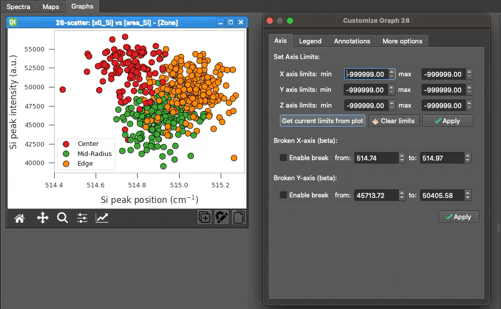
Adjusting legends and colors of the selected plot.
Legend Style & Error Bars¶
| Control | Description |
|---|---|
| Columns / Frame / Title / Font size / Alpha / Position | Layout and appearance of the legend box itself. |
| Error bar type | 95% CI, Standard Deviation, or None (options depend on plot style). |
| Cap size | Width of the error bar end caps. |
4.3 Annotations Tab¶
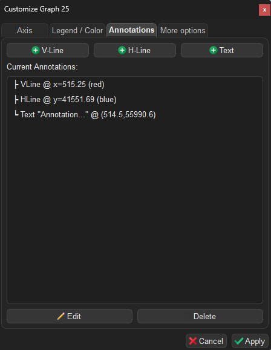
The Annotations tab of the Customize Graph Dialog.
The Annotations tab allows you to overlay reference lines and text labels on top of your plot.
Adding Annotations¶
Click one of the buttons at the top to add an annotation at the center of the current plot view:
| Button | Description |
|---|---|
| V-Line / H-Line | Adds a vertical/horizontal reference line (default: red/blue, dashed). |
| Text | Adds a text label with a rounded background box (default: yellow background). |
| Arrow | Adds a point-to-point arrow. |
| V-Span / H-Span | Adds a shaded vertical/horizontal band between two values. |
| Box | Adds a filled or outlined rectangle. |
| Callout | Adds a text label with a pointer arrow to a specific data point. |
Managing Annotations¶
All current annotations are listed below the buttons. Select an annotation to Edit or Delete it. Each annotation type's edit dialog exposes the properties relevant to it — line/span/box color, style, and width; text content, font size, color, and background; arrow/callout endpoint and pointer position.
Tip: Annotations can be dragged directly on the plot canvas. Their positions are persisted when saving the workspace. Double-clicking an annotation on the canvas also opens its edit dialog.
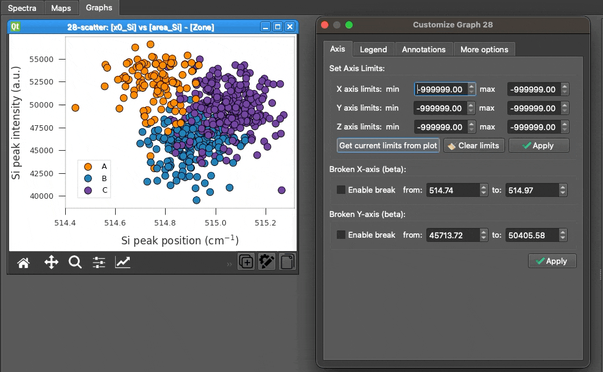
Adjusting the position and appearance of annotations on the selected plot.
4.4 More Options Tab¶
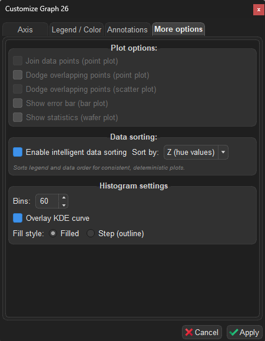
The More Options tab of the Customize Graph Dialog.
The More Options tab adapts dynamically to the active plot style, showing only the controls relevant to the current graph.
Plot Options (General)¶
These checkboxes are always visible, but only enabled when the corresponding plot style is active:
| Option | Applicable style | Description |
|---|---|---|
| Join data points | point |
Connects the mean values with lines between categories. |
| Dodge overlapping points | point |
Offsets overlapping hue groups horizontally to prevent overlap. |
| Dodge overlapping points | scatter |
Offsets overlapping hue groups horizontally for scatter plots. |
| Show error bar | bar |
Displays standard deviation error bars on top of each bar. |
| Show statistics | wafer |
Overlays statistical summary (mean, std, etc.) on the wafer map. |
| Theme | all styles | Figure color scheme: Light, Dark, or Soft Dark. |
| X label rotation | all styles | Rotates the X-axis tick labels (0–90°). |
| Grid | all styles | Toggles the plot's background grid lines. |
Font Sizes (pt)¶
Set the point size of the Title, Subtitle, Axis label, and Tick label independently (defaults: 12/10/12/9). The subtitle text itself is edited in the side panel, not here.
Data Sorting¶
Controls how categories and legend items are ordered:
| Option | Description |
|---|---|
| Enable intelligent data sorting | If checked, sorts the underlying dataset deterministically before plotting (recommended). If unchecked, the plot strictly preserves the original row order of the dataset. |
| Sort by | When sorting is enabled, choose the target axis for sorting: - Z (hue values): Sorts categories primarily by legend group (default). - X values: Sorts X-axis categories. - Y values: Sorts data ascending based on the Y metric. |
Note: Disabling intelligent data sorting is useful if your dataset is already pre-sorted and you wish to explicitly maintain that sequence. When you change sorting settings, the legend colors are automatically reset to the default palette sequence to ensure a clean positional color scheme.
Trendline Settings¶
Visible only when the plot style is trendline:
| Option | Description |
|---|---|
| Polynomial order | Set the degree of the polynomial fit (1 = linear, 2 = quadratic, …, up to 10). |
| Anchor point | Constrain the fit to pass through a specific point. Choose Origin (0, 0) or enter a custom (X₀, Y₀). |
| Fit equation(s) | Displays the computed equation and R² value for each hue group in a table. Click Copy to export as tab-separated text (paste directly into Excel). |
Histogram Settings¶
Visible only when the plot style is histogram:
| Option | Description |
|---|---|
| Bins | Number of histogram bins (2–500, default: 20). |
| Overlay KDE curve | Superimposes a smooth Kernel Density Estimate curve on the histogram. |
| Fill style | Choose Filled bars (default) or Step (outline only). |
Colormap Scale¶
Visible only for wafer and 2Dmap styles — controls how data values map to colors:
| Option | Description |
|---|---|
| Normalization | Linear (default), Log, or Centered (diverging scale around a reference value). |
| Center value | For Centered normalization, the data value that sits at the midpoint of the colormap. |
5. Data Filtering¶
You can dynamically filter the plotted data by applying boolean logic expressions in the Filter field using the format: (column_name) (operator) (value).
Note: String values must be enclosed in double quotes (
"text"). Column headers containing spaces must be enclosed in backticks (`column name`).
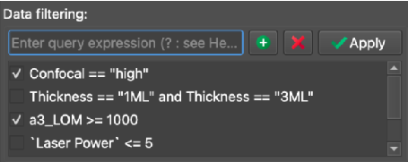
An example demonstrating how to apply filters to a dataset dynamically.
| Filter Expression | Resulting Behavior |
|---|---|
Confocal != "high" |
Excludes all data points where the "Confocal" column equals "high". |
Thickness == "1ML" or Thickness == "3ML" |
Includes only the data points where the "Thickness" column equals exactly "1ML" or "3ML". |
`Laser Power` <= 5 |
Includes data points where the "Laser Power" column is less than or equal to 5. |
6. Statistical Calculations & Fitting Details¶
For statistical plot styles (point, bar, box, and trendline), SPECTROview automatically calculates essential metrics and visualizes the distribution of your data.
6.1 Point and Bar Plots¶
- Central Value (Mean): The primary data point (the circle marker in a
pointplot or the top of the bar in abarplot) represents the arithmetic mean of all Y-values for a given X-category. - Error Bars (95% CI): The error bars extending from the mean represent the 95% Confidence Interval of the mean. This is calculated using the Standard Error of the Mean (SEM):
Error Bar = ± (1.96 × SEM)whereSEM = Standard Deviation / sqrt(N).
6.2 Box Plot¶
The box plot natively displays the statistical distribution of the dataset based on standard five-number summaries:
- Box Bounds (Q1 to Q3): The main body of the box spans from the first quartile (25th percentile) to the third quartile (75th percentile), known as the Interquartile Range (IQR).
- Median Line: The horizontal line inside the box marks the Median (50th percentile).
- Whiskers: The whiskers extend to the furthest data points that are still within 1.5 × IQR of the box edges.
- Fliers (Outliers): Any data points falling beyond the whiskers are explicitly drawn as individual outlier points.
6.3 Trendline Estimation¶
-
Standard Fit (No Anchor): The trendline is calculated using an Ordinary Least Squares (OLS) linear regression to fit a polynomial of the specified degree:
y = p₀·xᵈ + p₁·xᵈ⁻¹ + ... + p_dwheredis the polynomial order. -
Anchored Fit (Forced through a point (x₀, y₀)): The coordinate system is shifted so that the anchor point becomes the origin (
x' = x - x₀,y' = y - y₀). A polynomial without a constant term (zero intercept) is then fitted to the shifted variables: - For Linear order (1): The slope
mis directly calculated as:m = sum(x'_i * y'_i) / sum((x'_i)²) - For Higher orders (>1): The shifted data is fitted with a zero intercept using a linear least squares solver. The fitted curve is then translated back to the original coordinate space.
6.4 Trendline Confidence Intervals¶
- Confidence Level: The shaded band around standard trendlines represents a 95% confidence interval for the fitted mean response.
- Estimation Method: The interval is computed analytically from the regression residuals: the standard error of the estimate
SE = sqrt(Σ(yᵢ − ŷᵢ)² / (N − 2))is combined with the standard mean-response formula± 1.96 · SE · sqrt(1/N + (x − x̄)² / Σ(xᵢ − x̄)²), so the band widens away from the center of the data. (This replaces an earlier Seaborn-based bootstrap estimate; the Graphs workspace no longer uses Seaborn.) - Anchored Fits: Confidence intervals are only computed and displayed for standard, unconstrained fits. If an anchor is enabled, the confidence interval band is omitted.